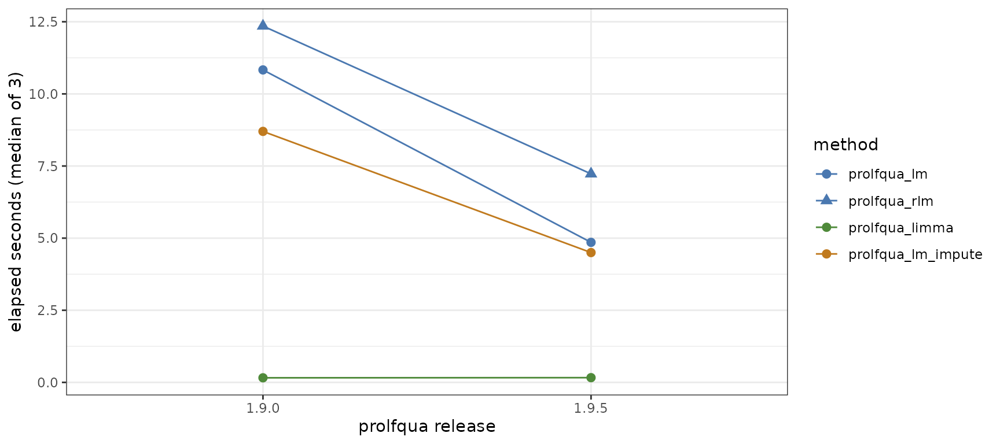
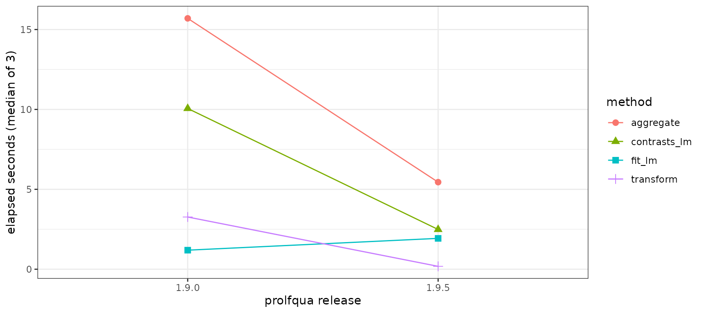

Benchmark scores across prolfqua releases
Witold E. Wolski
2026-11-25
Source:vignettes/Score_history.Rmd
Score_history.Rmdmake score-history runs the benchmark pipeline
(workflow/Snakefile) with the installed prolfqua and
appends its scores and step timings to inst/extdata/score_history.tsv,
one block of rows per prolfqua release. This page shows the partial AUC
pAUC_10 per release; the file holds every score (AUC, pAUC_10, pAUC_20,
AP, pAP_50, pAP_80), per contrast and for all contrasts pooled. The
current results with ROC curves are in the vignette
Benchmark_results.
- Releases: 1.9.0 (2026-11-02), 1.9.5 (2026-11-24)
- pAUC_10: partial area under the ROC curve up to a false positive
rate of 0.1, on a 0 to 100 scale, all contrasts of a dataset pooled;
ranking by fold change (
log_fc), by p-value signed by the fold change (scaled.p_value) and by t statistic (t_statistic) - Encoding: colour is the model family of the prolfqua factory
figure, point shape the model within its family; MSstats, proDA and
msqrob2 are dark grey with open shapes. A model looks the same here and
in
Benchmark_results -
tool_versionin the data: the software that fitted the model; MSstats, proDA and msqrob2 carry their own version, so their scores change with their releases, not with prolfqua’s - History starts with prolfqua 1.9.0 (commit
f4dfb7f3, 2026-11-02, before the rOpenSci self-review), rerun with the pipeline (make score-history-release V=1.9.0 PROLFQUA=f4dfb7f3 PROLFQUAPP=18914707); each tagged release adds a block: install it, thenmake score-history
pAUC_10 across releases
One figure and one table per dataset; the numbers of every release
are in score_history.tsv.
Lines join the releases of a prolfqua model; a model has no point at a
release without its facade (prolfqua_ropecaV2_nested came
with prolfqua 1.9.4). MSstats, proDA and msqrob2 are shown at their
latest recorded run only.
CPTAC_MaxQuant
![pAUC_10 on CPTAC_MaxQuant per prolfqua release: partial area under the ROC curve up to a false positive rate of 0.1 (0 to 100), all contrasts pooled, separating UPS proteins (changed) from YEAST proteins (unchanged). Panels rank proteins by fold change (log_fc), by p-value signed by the fold change (scaled.p_value) and by t statistic. Lines join the releases of a prolfqua model. Colour: model family as in the prolfqua factory figure; shape: model within its family; grey open shapes: MSstats, proDA and msqrob2 at their latest recorded run.](Score_history_files/figure-html/unnamed-chunk-4-1.png)
pAUC_10 on CPTAC_MaxQuant per prolfqua release: partial area under the ROC curve up to a false positive rate of 0.1 (0 to 100), all contrasts pooled, separating UPS proteins (changed) from YEAST proteins (unchanged). Panels rank proteins by fold change (log_fc), by p-value signed by the fold change (scaled.p_value) and by t statistic. Lines join the releases of a prolfqua model. Colour: model family as in the prolfqua factory figure; shape: model within its family; grey open shapes: MSstats, proDA and msqrob2 at their latest recorded run.
| model | release | log_fc | scaled.p_value | t_statistic |
|---|---|---|---|---|
| prolfqua_ropecaV2_nested | 1.9.5 | 92.8 | 91.0 | 91.0 |
| prolfqua_limma | 1.9.5 | 89.0 | 84.5 (+0.3) | 84.4 (+0.2) |
| prolfqua_lm | 1.9.5 | 89.0 | 84.0 (+0.1) | 84.0 (+0.1) |
| prolfqua_deqms | 1.9.5 | 89.0 | 83.1 (+9.6) | 83.2 (+8.0) |
| prolfqua_ropeca_nested | 1.9.5 | 88.6 | 82.6 (+0.8) | 80.9 |
| prolfqua_limpa_nested | 1.9.5 | 86.8 | 81.2 | 81.3 |
| prolfqua_lmer_nested | 1.9.5 | 91.6 | 77.8 | 77.8 |
| prolfqua_deqms_voom | 1.9.5 | 91.7 | 76.7 (+5.3) | 76.8 (+4.6) |
| msqrob2_hurdle (msqrob2 1.20.0) | 1.9.5 | 72.5 | 74.0 | 66.1 |
| prolfqua_hurdle_nested | 1.9.5 | 72.5 | 73.2 | 67.1 |
| prolfqua_limpa | 1.9.5 | 79.5 | 69.4 (+0.1) | 69.3 (+0.1) |
| msqrob2 1.20.0 | 1.9.5 | 72.5 | 68.9 | 66.1 |
| prolfqua_lm_impute | 1.9.5 | 72.5 | 67.3 | 67.1 |
IonStar_FragPipe_MSstats
![pAUC_10 on IonStar_FragPipe_MSstats per prolfqua release: partial area under the ROC curve up to a false positive rate of 0.1 (0 to 100), all contrasts pooled, separating ECOLI proteins (changed) from HUMAN proteins (unchanged). Panels rank proteins by fold change (log_fc), by p-value signed by the fold change (scaled.p_value) and by t statistic. Lines join the releases of a prolfqua model. Colour: model family as in the prolfqua factory figure; shape: model within its family; grey open shapes: MSstats, proDA and msqrob2 at their latest recorded run.](Score_history_files/figure-html/unnamed-chunk-5-1.png)
pAUC_10 on IonStar_FragPipe_MSstats per prolfqua release: partial area under the ROC curve up to a false positive rate of 0.1 (0 to 100), all contrasts pooled, separating ECOLI proteins (changed) from HUMAN proteins (unchanged). Panels rank proteins by fold change (log_fc), by p-value signed by the fold change (scaled.p_value) and by t statistic. Lines join the releases of a prolfqua model. Colour: model family as in the prolfqua factory figure; shape: model within its family; grey open shapes: MSstats, proDA and msqrob2 at their latest recorded run.
| model | release | log_fc | scaled.p_value | t_statistic |
|---|---|---|---|---|
| prolfqua_ropecaV2_nested | 1.9.5 | 76.5 | 91.6 | 92.0 |
| prolfqua_ropeca_nested | 1.9.5 | 75.4 | 90.2 (+0.1) | 90.0 |
| prolfqua_lm | 1.9.5 | 77.7 | 86.2 | 86.2 |
| prolfqua_deqms | 1.9.5 | 77.7 | 86.2 | 86.2 |
| prolfqua_deqms_voom | 1.9.5 | 79.0 | 86.1 | 86.1 |
| prolfqua_lm_impute | 1.9.5 | 75.3 | 84.1 | 84.1 |
| msqrob2_hurdle (msqrob2 1.20.0) | 1.9.5 | 77.3 | 83.9 | 83.1 |
| prolfqua_hurdle_nested | 1.9.5 | 75.3 | 83.9 | 84.1 |
| msqrob2 1.20.0 | 1.9.5 | 77.3 | 83.4 | 83.1 |
| prolfqua_limma | 1.9.5 | 76.4 | 81.7 | 81.7 |
| MSstats 4.20.0 | 1.9.5 | 74.5 | 81.5 | 81.5 |
| prolfqua_lmer_nested | 1.9.5 | 74.5 | 80.6 | 80.8 |
| prolfqua_limpa | 1.9.5 | 77.6 | 78.6 | 78.6 |
| prolfqua_limpa_nested | 1.9.5 | 75.2 | 72.9 | 72.9 |
IonStar_FragPipe_protein
![pAUC_10 on IonStar_FragPipe_protein per prolfqua release: partial area under the ROC curve up to a false positive rate of 0.1 (0 to 100), all contrasts pooled, separating ECOLI proteins (changed) from HUMAN proteins (unchanged). Panels rank proteins by fold change (log_fc), by p-value signed by the fold change (scaled.p_value) and by t statistic. Lines join the releases of a prolfqua model. Colour: model family as in the prolfqua factory figure; shape: model within its family; grey open shapes: MSstats, proDA and msqrob2 at their latest recorded run.](Score_history_files/figure-html/unnamed-chunk-6-1.png)
pAUC_10 on IonStar_FragPipe_protein per prolfqua release: partial area under the ROC curve up to a false positive rate of 0.1 (0 to 100), all contrasts pooled, separating ECOLI proteins (changed) from HUMAN proteins (unchanged). Panels rank proteins by fold change (log_fc), by p-value signed by the fold change (scaled.p_value) and by t statistic. Lines join the releases of a prolfqua model. Colour: model family as in the prolfqua factory figure; shape: model within its family; grey open shapes: MSstats, proDA and msqrob2 at their latest recorded run.
| model | release | log_fc | scaled.p_value | t_statistic |
|---|---|---|---|---|
| msqrob2_protein (msqrob2 1.20.0) | 1.9.5 | 86.6 | 96.1 | 95.8 |
| prolfqua_lm | 1.9.5 | 80.1 | 91.8 | 91.7 |
| prolfqua_deqms | 1.9.5 | 80.1 | 91.6 | 91.7 |
| prolfqua_deqms_voom | 1.9.5 | 85.7 | 88.0 | 87.9 |
| prolfqua_limma | 1.9.5 | 76.9 | 87.4 | 86.8 |
| prolfqua_lm_impute | 1.9.5 | 70.1 | 80.4 | 79.4 |
| proDA 1.26.0 | 1.9.5 | 61.7 | 80.0 | 80.0 |
| prolfqua_limpa | 1.9.5 | 75.6 | 74.4 | 74.4 |
IonStar_MaxQuant
![pAUC_10 on IonStar_MaxQuant per prolfqua release: partial area under the ROC curve up to a false positive rate of 0.1 (0 to 100), all contrasts pooled, separating ECOLI proteins (changed) from HUMAN proteins (unchanged). Panels rank proteins by fold change (log_fc), by p-value signed by the fold change (scaled.p_value) and by t statistic. Lines join the releases of a prolfqua model. Colour: model family as in the prolfqua factory figure; shape: model within its family; grey open shapes: MSstats, proDA and msqrob2 at their latest recorded run.](Score_history_files/figure-html/unnamed-chunk-7-1.png)
pAUC_10 on IonStar_MaxQuant per prolfqua release: partial area under the ROC curve up to a false positive rate of 0.1 (0 to 100), all contrasts pooled, separating ECOLI proteins (changed) from HUMAN proteins (unchanged). Panels rank proteins by fold change (log_fc), by p-value signed by the fold change (scaled.p_value) and by t statistic. Lines join the releases of a prolfqua model. Colour: model family as in the prolfqua factory figure; shape: model within its family; grey open shapes: MSstats, proDA and msqrob2 at their latest recorded run.
| model | release | log_fc | scaled.p_value | t_statistic |
|---|---|---|---|---|
| prolfqua_ropecaV2_nested | 1.9.5 | 64.0 | 77.9 | 77.9 |
| prolfqua_ropeca_nested | 1.9.5 | 63.0 | 77.1 (+0.1) | 75.8 |
| prolfqua_lm | 1.9.5 | 67.1 | 75.6 | 75.6 |
| prolfqua_deqms | 1.9.5 | 67.1 | 75.4 | 75.4 |
| prolfqua_lm_impute | 1.9.5 | 66.4 | 73.9 | 73.9 |
| msqrob2_hurdle (msqrob2 1.20.0) | 1.9.5 | 66.2 | 73.6 | 72.9 |
| prolfqua_hurdle_nested | 1.9.5 | 66.4 | 73.4 | 73.9 |
| prolfqua_lmer_nested | 1.9.5 | 66.3 | 73.2 | 73.4 |
| msqrob2 1.20.0 | 1.9.5 | 66.2 | 73.1 | 72.9 |
| prolfqua_limma | 1.9.5 | 66.3 | 70.8 | 70.6 |
| prolfqua_limpa | 1.9.5 | 69.3 | 67.4 | 67.4 |
| prolfqua_limpa_nested | 1.9.5 | 63.4 | 66.4 | 66.4 |
| prolfqua_deqms_voom | 1.9.5 | 69.9 | 65.9 | 65.8 |
IonStar_MaxQuant_protein
![pAUC_10 on IonStar_MaxQuant_protein per prolfqua release: partial area under the ROC curve up to a false positive rate of 0.1 (0 to 100), all contrasts pooled, separating ECOLI proteins (changed) from HUMAN proteins (unchanged). Panels rank proteins by fold change (log_fc), by p-value signed by the fold change (scaled.p_value) and by t statistic. Lines join the releases of a prolfqua model. Colour: model family as in the prolfqua factory figure; shape: model within its family; grey open shapes: MSstats, proDA and msqrob2 at their latest recorded run.](Score_history_files/figure-html/unnamed-chunk-8-1.png)
pAUC_10 on IonStar_MaxQuant_protein per prolfqua release: partial area under the ROC curve up to a false positive rate of 0.1 (0 to 100), all contrasts pooled, separating ECOLI proteins (changed) from HUMAN proteins (unchanged). Panels rank proteins by fold change (log_fc), by p-value signed by the fold change (scaled.p_value) and by t statistic. Lines join the releases of a prolfqua model. Colour: model family as in the prolfqua factory figure; shape: model within its family; grey open shapes: MSstats, proDA and msqrob2 at their latest recorded run.
| model | release | log_fc | scaled.p_value | t_statistic |
|---|---|---|---|---|
| msqrob2_protein (msqrob2 1.20.0) | 1.9.5 | 86.9 | 88.0 | 87.9 |
| prolfqua_deqms | 1.9.5 | 81.2 | 82.5 | 82.6 |
| prolfqua_deqms_voom | 1.9.5 | 86.9 | 82.3 | 82.3 |
| prolfqua_lm | 1.9.5 | 81.2 | 82.2 | 82.3 |
| prolfqua_limma | 1.9.5 | 78.9 | 79.1 | 78.8 |
| prolfqua_lm_impute | 1.9.5 | 63.8 | 65.9 | 65.4 |
| proDA 1.26.0 | 1.9.5 | 49.7 | 65.8 | 65.8 |
| prolfqua_limpa | 1.9.5 | 66.3 | 62.8 | 62.9 |
Timings
Median elapsed seconds over 3 repetitions, IonStar MaxQuant peptides, all proteins with at least 2 peptides. Timings compare only within one machine: R 4.6.2 aarch64-apple-darwin23.

Elapsed seconds of build_contrast_analysis() per prolfqua release, fit and contrasts, for the methods lm, limma, lm_impute and rlm (rows facade_lm, facade_limma, facade_lm_impute and facade_rlm of score_history.tsv), median of 3 runs on the IonStar MaxQuant peptides. Colour and shape as in the pAUC_10 figures.

Elapsed seconds of the core prolfqua steps per release, median of 3 runs on the IonStar MaxQuant peptides. transform: log2 and robust scaling on the human proteins; aggregate: median polish to proteins; fit_lm: one lm per protein; contrasts_lm: Wald contrasts with variance moderation.
| release | aggregate | contrasts_lm | facade_limma | facade_lm | facade_lm_impute | facade_rlm | fit_lm | transform |
|---|---|---|---|---|---|---|---|---|
| 1.9.0 | 15.70 | 10.06 | 0.16 | 10.83 | 8.70 | 12.35 | 1.19 | 3.27 |
| 1.9.5 | 5.45 | 2.49 | 0.16 | 4.85 | 4.50 | 7.23 | 1.93 | 0.18 |